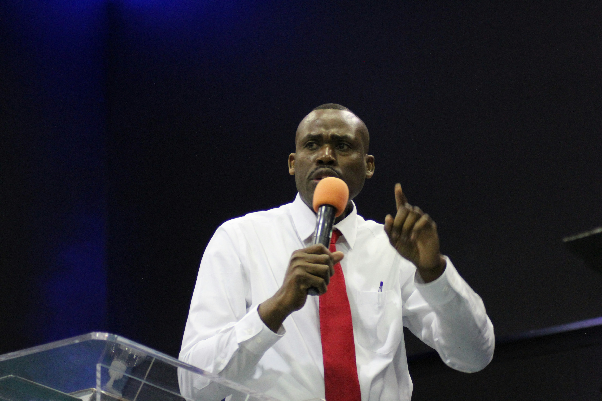
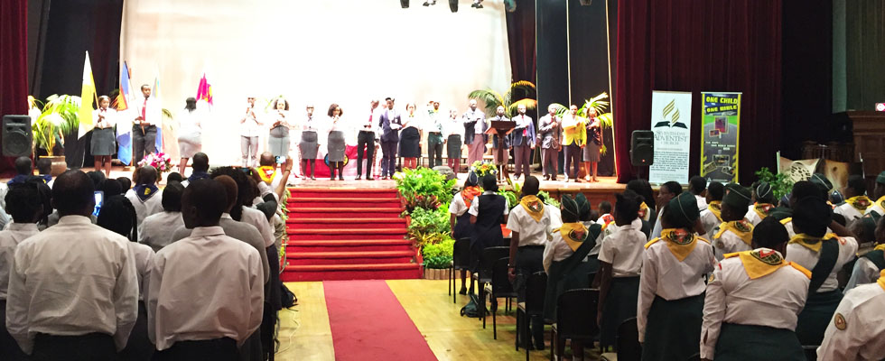

Pastor David Mensah
Senior Pastor
Leads our congregation in worship, teaching and pastoral care.
Who we are, what we believe, and why we do what we do.
Durban Central SDA Church began as a small group of believers meeting together to worship and study Scripture. Over the years, that gathering grew into a diverse, multicultural congregation united by a shared hope in Jesus Christ and a shared calling to serve our city.
Today we're a church family made up of young and old, lifelong Adventists and brand-new believers, all learning together what it means to follow Jesus in Durban, right now.

"To make disciples of Jesus Christ who live as His loving witnesses and proclaim to all people the everlasting gospel of the Three Angels' Messages in preparation for His soon return."
"Every member actively prepared for Christ's return while serving God and the community through love, compassion, and faithful stewardship."
The convictions that shape how we worship, serve and treat one another.
We anchor everything we teach and do in Scripture.
We aim to be honest and consistent, in public and in private.
We treat every person with the same grace God has shown us.
We believe faith is proven by how we serve our neighbours.
We offer God our best in worship, ministry and administration.
We were never meant to walk out our faith alone.
We manage our time, talents and resources as gifts entrusted to us.
We honour the dignity of every person, without exception.
As a Seventh-day Adventist church, we hold to the 28 Fundamental Beliefs shared by Adventist congregations worldwide — covering Scripture, the Godhead, creation, salvation by grace through faith, the Sabbath, and the soon return of Jesus Christ, among others.
Read Our 28 Fundamental BeliefsThe team who shepherd and serve our church family.

Senior Pastor
Leads our congregation in worship, teaching and pastoral care.
Head Elder
Supports the pastor and oversees the local church board.
Ministries Coordinator
Helps members find their place across our ministries.
Youth & Pathfinders Leader
Guides our children and teens in faith and adventure.
Durban Central Seventh-day Adventist Church was established to serve the growing Adventist community in Durban.
The church continued to grow as more families joined the congregation, strengthening its worship services and spiritual ministries.
Community outreach, youth programmes, and evangelistic initiatives expanded, allowing the church to serve more people throughout Durban.
The congregation prepared to inaugurate its modern church building, reflecting years of faith, dedication, and God's blessings.
Durban Central SDA Church is a vibrant, multicultural church family committed to worship, discipleship, community service, and sharing the everlasting gospel.
Come as you are. Many members dress smart-casual, but you'll never feel out of place.
Sabbath School (Bible study) starts at 9:00 AM, followed by Divine Service at 10:30 AM.
Children's Sabbath School classes run during service, so the whole family can grow together.
On-site parking is available, with members happy to help direct you when you arrive.
Join us this Sabbath and see why so many call this church home.